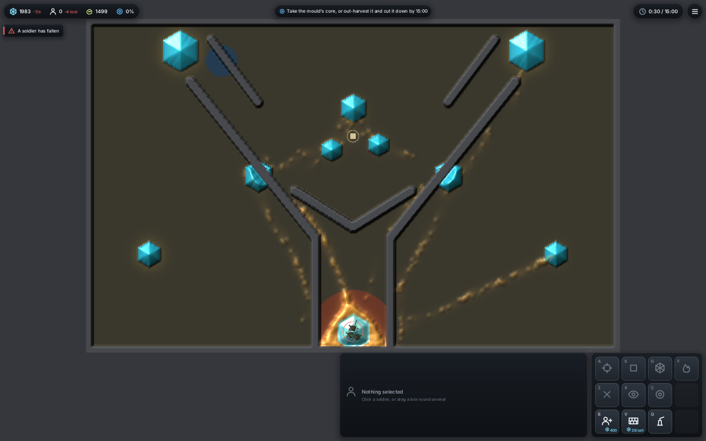
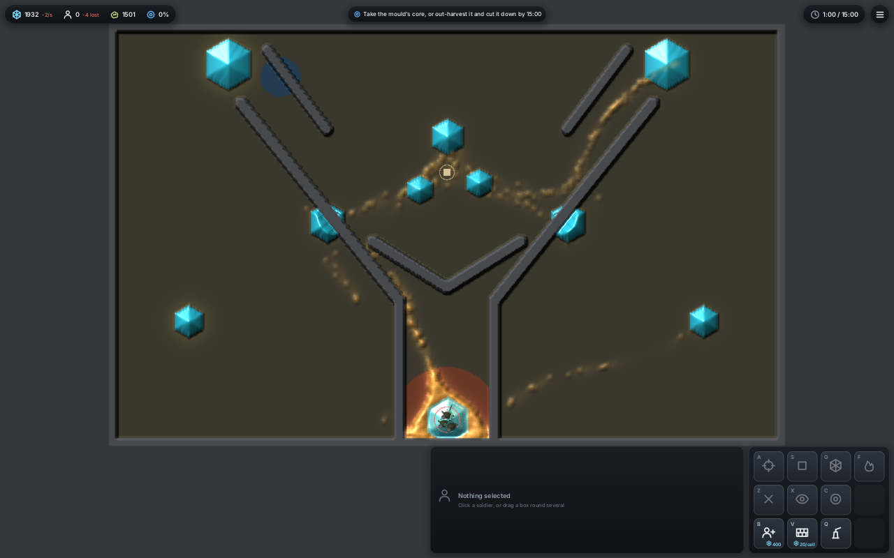
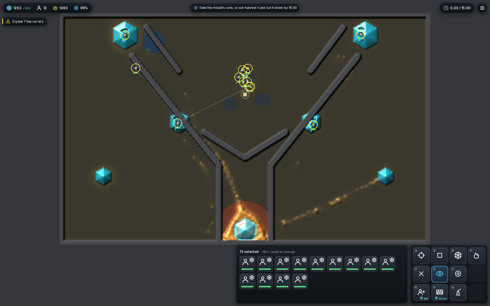
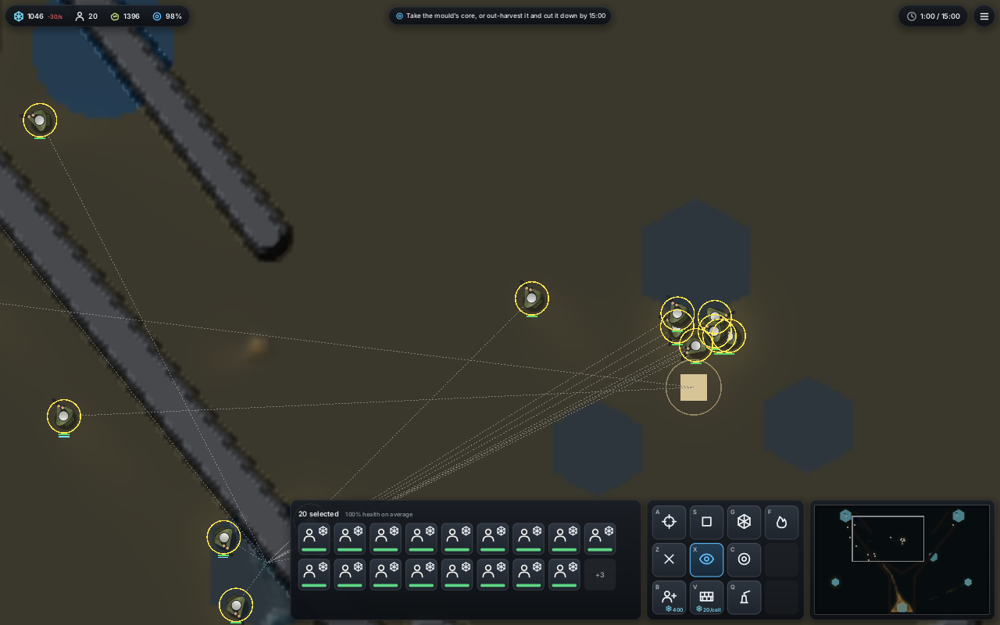

<title>Larder World, morning of 11-12</title>
<meta name="claude:viewport-fit-sides" content="cover">
<link rel="stylesheet" href="https://fonts.googleapis.com/css2?family=Space+Grotesk:wght@500;700&family=Inter:wght@400;600&family=JetBrains+Mono:wght@400;600&display=swap">
<style>
/* Layout: one reading column; a build strip, "try these first", then the full change log as a table grouped by where you meet it. */
:root{
  --bg:#f5f7f2; --panel:#ffffff; --fg:#1d2420; --muted:#5b665f; --line:#d7ddd5;
  --accent:#7a8f1c; --accent-ink:#4c5a0e; --ok:#2f7d4a; --warn:#a2601a; --key:#eef1e8;
  --display:"Space Grotesk",system-ui,sans-serif; --body:"Inter",system-ui,sans-serif; --mono:"JetBrains Mono",ui-monospace,Menlo,monospace;
}
@media (prefers-color-scheme: dark){:root:not([data-theme="light"]){
  --bg:#141814; --panel:#1c211c; --fg:#e4e9e1; --muted:#9aa59c; --line:#2f372f;
  --accent:#c4d64a; --accent-ink:#d9e77a; --ok:#6fcf8e; --warn:#e9a55a; --key:#262d25; color-scheme:dark}}
:root[data-theme="dark"]{
  --bg:#141814; --panel:#1c211c; --fg:#e4e9e1; --muted:#9aa59c; --line:#2f372f;
  --accent:#c4d64a; --accent-ink:#d9e77a; --ok:#6fcf8e; --warn:#e9a55a; --key:#262d25; color-scheme:dark}
body{background:var(--bg);color:var(--fg);font:15px/1.55 var(--body);
  padding-left:max(16px,env(safe-area-inset-left,0px));padding-right:max(16px,env(safe-area-inset-right,0px));padding-block:28px 64px}
main{max-width:1040px;margin:0 auto;display:flex;flex-direction:column;gap:36px}
h1,h2,h3{font-family:var(--display);text-wrap:balance;margin:0;line-height:1.2}
h1{font-size:2rem} h2{font-size:1.35rem} h3{font-size:1.05rem}
p{margin:0;max-width:68ch}
.lede{color:var(--muted);font-size:1.02rem}
section{display:flex;flex-direction:column;gap:14px}
.strip{display:grid;grid-template-columns:repeat(auto-fit,minmax(200px,1fr));gap:12px}
.strip div{background:var(--panel);border:1px solid var(--line);border-radius:8px;padding:12px 14px;display:flex;flex-direction:column;gap:2px;min-width:0}
.lab{font-size:.72rem;letter-spacing:.08em;text-transform:uppercase;color:var(--muted)}
.val{font-family:var(--mono);font-size:.92rem}
.ok{color:var(--ok)} .warn{color:var(--warn)}
kbd,code{font-family:var(--mono);font-size:.85em;background:var(--key);border:1px solid var(--line);border-radius:4px;padding:0 5px;white-space:nowrap}
pre{font-family:var(--mono);font-size:.85rem;background:var(--panel);border:1px solid var(--line);border-radius:8px;padding:12px 14px;overflow-x:auto;margin:0}
ol.try{margin:0;padding-left:1.3em;display:flex;flex-direction:column;gap:10px;max-width:72ch}
ol.try b{font-family:var(--display)}
.tw{overflow-x:auto;border:1px solid var(--line);border-radius:8px;background:var(--panel)}
table{border-collapse:collapse;width:100%;font-size:.88rem;min-width:760px}
th,td{text-align:left;vertical-align:top;padding:8px 10px;border-bottom:1px solid var(--line)}
th{font-size:.72rem;letter-spacing:.07em;text-transform:uppercase;color:var(--muted);font-weight:600}
tr.grp td{background:var(--key);font-family:var(--display);font-weight:700;color:var(--accent-ink)}
td.n{font-family:var(--mono);white-space:nowrap}
td.c{color:var(--muted);font-variant-numeric:tabular-nums}
.pill{display:inline-block;font-size:.72rem;padding:1px 7px;border-radius:99px;border:1px solid var(--line);white-space:nowrap}
.on{color:var(--ok);border-color:currentColor} .opt{color:var(--accent-ink);border-color:currentColor} .off{color:var(--muted)}
.pics{display:grid;grid-template-columns:repeat(auto-fit,minmax(300px,1fr));gap:14px}
figure{margin:0;background:var(--panel);border:1px solid var(--line);border-radius:8px;overflow:hidden;display:flex;flex-direction:column}
figure img{display:block;width:100%;height:auto}
figcaption{padding:8px 12px;font-size:.85rem;color:var(--muted)}
.keys{display:grid;grid-template-columns:repeat(auto-fit,minmax(240px,1fr));gap:6px 24px;font-size:.9rem}
.keys div{display:flex;gap:10px;align-items:baseline;min-width:0}
.keys kbd{min-width:2.2em;text-align:center}
a{color:var(--accent-ink)}
:focus-visible{outline:2px solid var(--accent);outline-offset:2px}
</style>

<main>
<header style="display:flex;flex-direction:column;gap:10px">
  <span class="lab">Larder World · morning playtest · 2026-11-12</span>
  <h1>What changed overnight, and what to try</h1>
  <p class="lede">Twenty-nine pull requests merged between 04:30Z and 11:00Z (#93 to #122; #113 followed at 12:14Z). The checks below ran on a8669bd, before #113. Below: the five things to play first, every change with its key and the counts its thread measured, and pictures from the combined build.</p>
</header>

<section>
  <h2>The build</h2>
  <div class="strip">
    <div><span class="lab">Commit</span><span class="val">main a8669bd (#122)</span></div>
    <div><span class="lab">cargo test --release</span><span id="tests" class="val ok">291 passed, 0 failed</span></div>
    <div><span class="lab">Headless run</span><span id="look" class="val ok">look=DIR runs, rush and farm</span></div>
    <div><span class="lab">Merged after the checks</span><span class="val">#113 shot craters (945e080)</span></div>
  </div>
<pre>git pull
cargo run --release --bin larder-world                       # the fork map, seed 1
cargo run --release --bin larder-world -- mission=1-landfall # a campaign mission</pre>
</section>

<section>
  <h2>Your one open choice</h2>
  <p>Pick a look for the hole under fire: three blind looks of the crater on clay and plain soil, on the <a href="https://claude.ai/artifact/AcRm3aeB97YLpWobtmABhs">Craters Under Fire</a> page (looks 1-3). The crater rule itself (#113) merged at 12:14Z with craters on; only the look is yours to pick.</p>
</section>

<section>
  <h2>Try these first</h2>
  <ol class="try">
    <li><b>Shoot freely, and watch the mould come for you.</b> Shots cost no food now, and the mould smells soldiers and moves on them (#106). A hit leaves a real gap in the body that closes as walkers flow back, with no painted wound (#93). Your bar from last night, a hole that keeps growing under fire, is #113 (merged 12:14Z): sustained fire lays a crater, and the hole stays open while the squad keeps shooting.</li>
    <li><b>Build something with soldiers.</b> Select soldiers, press <kbd>Q</kbd>, then <kbd>T</kbd> turret, <kbd>L</kbd> lure, <kbd>U</kbd> pump or <kbd>I</kbd> outpost, and click. It appears as a ghost; the soldiers walk over and raise it in 8 s, and idle soldiers nearby help (#112, #118, #122). <kbd>J</kbd> turns the lures on and off. Harvesters bank at the nearest larder or outpost.</li>
    <li><b>Give orders like an RTS.</b> <kbd>Shift</kbd> queues orders, <kbd>A</kbd> then a click is attack-move, double-click selects everyone on screen, click the larder then right-click to set a rally point, and the wheel zooms in to 24 px a cell (#102).</li>
    <li><b>Listen.</b> Shots get heavier the more walkers they kill (#96), and the whole mould has one breathing voice that follows its size, hunger and flinching (#99). <kbd>O</kbd> toggles sound, <kbd>K</kbd> the voice.</li>
    <li><b>Play a mission, or a different mould.</b> <code>mission=1-landfall</code>, <code>2-first-contact</code> or <code>3-the-gaps</code> (#97, #107, #111, #114). New enemy personalities run with <code>tier=drifter</code>, <code>tier=sprawler</code> or <code>tier=trunk</code> (#115).</li>
  </ol>
</section>

<section>
  <h2>Pictures from this build</h2>
  <p class="lede">The headless window on the fork map, seed 1, played by the rush and farm hands, at 5, 30 and 60 s (software Vulkan in the cloud, so no timing here).</p>
  <div class="pics" id="pics"><figure><figcaption>Rush, 30 s: all soldiers lost (4 fell), mould 1,499 walkers at the larder; 43 shots killed 1,494.</figcaption></figure><figure><figcaption>Rush, 60 s: mould 1,501, bank 1,932, no soldiers left. The rush hand loses this seed.</figcaption></figure><figure><figcaption>Farm, 30 s: 13 soldiers, 2,853 harvested, 20 shots, 25 killed; mould 1,493.</figcaption></figure><figure><figcaption>Farm, 60 s, near view: 20 soldiers, 5,446 harvested, 61 shots killed 61; mould 1,396.</figcaption></figure></div>
</section>

<section>
  <h2>Every change, with its key and its counts</h2>
  <p class="lede">Counts are as each thread wrote them in its pull request: paired seeds with a sign-test p, frame cost on the machine named. "llvmpipe" means software Vulkan in the cloud, not the 1070.</p>
  <div class="tw"><table>
  <thead><tr><th>PR</th><th>What changes for you</th><th>How to try it</th><th>Counts</th><th>Default</th></tr></thead>
  <tbody>
  <tr class="grp"><td colspan="5">In the window now</td></tr>
  <tr><td class="n">#106</td><td>Shots cost no food; the mould smells soldiers and comes for them. Fleeing from gunfire stays opt-in.</td><td>Play normally</td><td class="c">Every plan vs idle 32-0. Flee as a default let random wipe the mould on 12 of 16, so it stays off.</td><td><span class="pill on">on</span></td></tr>
  <tr><td class="n">#93</td><td>A hit is a real gap in the body (thickness counts living walkers), no drawn stamp.</td><td>Shoot the mould; <code>look=DIR holes=1</code> times holes</td><td class="c">Hole stays open a median 0.53 s; a 3× slower clock only reaches 0.73 s.</td><td><span class="pill on">on</span></td></tr>
  <tr><td class="n">#112</td><td>Turret, lure, pump on a crystal, outpost as a second depot.</td><td><kbd>Q</kbd> then <kbd>T</kbd> <kbd>L</kbd> <kbd>U</kbd> <kbd>I</kbd>; <kbd>J</kbd> lures on/off</td><td class="c">Lure works on 8 of 8 seeds (p 0.008). Every plan beats idle and random 8-0 (p 0.008, holds under Holm).</td><td><span class="pill on">on</span></td></tr>
  <tr><td class="n">#118</td><td>Buildings drawn as sprites that rise as built, grey with damage, light up while working.</td><td>Place one</td><td class="c">1070 timing not yet run.</td><td><span class="pill on">on</span></td></tr>
  <tr><td class="n">#122</td><td>Buildings and walls start as ghosts; soldiers walk over and raise them in 8 s; harvesters bank at the nearest depot.</td><td>Select soldiers, place a building (<kbd>Q</kbd>) or wall (<kbd>V</kbd>); <kbd>Shift</kbd> queues</td><td class="c">Raise 8 s vs 0: turtle lower 7 of 8 (p 0.016), guard and pumps 7 of 8 (p 0.07). A census reset for every thread.</td><td><span class="pill on">on</span></td></tr>
  <tr><td class="n">#102</td><td>Queued orders, attack-move, soldiers move on from dry crystals, rally point, double-click select, zoom 24.</td><td><kbd>Shift</kbd>, <kbd>A</kbd>, double-click, larder + right-click or <kbd>R</kbd>, wheel</td><td class="c">Safe move-on vs off: farm 10 higher, 5 lower (p 0.30). A first version (wall lower 14 of 16, p 0.004) was rejected.</td><td><span class="pill on">on</span></td></tr>
  <tr><td class="n">#96</td><td>Shots crack and get heavier with the walkers they kill; kill crackle, approach pulse, theft and banking sounds.</td><td><kbd>O</kbd>; <code>look=DIR sound=F.wav</code> records</td><td class="c">80-walker full kill: 11 light, 10 mid, 22 heavy shots. Listener 2.1 to 3.5 µs a frame.</td><td><span class="pill on">on</span></td></tr>
  <tr><td class="n">#99</td><td>The mould's own voice: one breathing drone following size, hunger, eating and flinching.</td><td><kbd>K</kbd>; <code>voice=0</code></td><td class="c">Voice alone about -32 dBFS; a rush -22.9 dBFS with it, -23.6 without.</td><td><span class="pill on">on</span></td></tr>
  <tr><td class="n">#101 #110</td><td>The GPU step no longer blocks the frame: one packed readout a step, the step split in halves.</td><td><code>bench=SECS</code></td><td class="c">Read-backs a step 4.13 to 0.07; waits a step 1.00 to 0.00 (llvmpipe). Results unchanged.</td><td><span class="pill on">on</span></td></tr>
  <tr><td class="n">#116</td><td>A crash when a new recruit fired before it had a sound note is fixed; window loop smoke tests in CI.</td><td>n/a</td><td class="c">Window tests 16 to 35 s in CI.</td><td><span class="pill on">on</span></td></tr>
  <tr class="grp"><td colspan="5">Opt-in: missions and new moulds</td></tr>
  <tr><td class="n">#97 #107</td><td>Campaign missions 1-3 with their own map, rules, goal on the HUD and an end screen; goals tuned by census.</td><td><code>mission=1-landfall</code>, <code>2-first-contact</code>, <code>3-the-gaps</code></td><td class="c">M1: AI 20/20, idle and random 0/8. M2: AI 20/20, idle 0/4, random 1/4. M3: AI 18/20, idle and random 0/8.</td><td><span class="pill opt">mission=</span></td></tr>
  <tr><td class="n">#114</td><td>In missions you can lose to an overrun and get reserve recruits.</td><td><code>mission=…</code></td><td class="c">Landfall rush still going at 6:40 with recruits (was lost by 2:00).</td><td><span class="pill opt">missions</span></td></tr>
  <tr><td class="n">#111</td><td>Mission 3's goal line shows the share outside against the allowance.</td><td><code>mission=3-the-gaps</code></td><td class="c">Claim hand: 2.4% outside, 5% allowed.</td><td><span class="pill opt">missions</span></td></tr>
  <tr><td class="n">#115</td><td>New enemy personalities: Drifter, Sprawler, Trunk (Wary and Grudge are CPU only for now).</td><td><code>tier=drifter</code>, <code>sprawler</code>, <code>trunk</code></td><td class="c">Wary and Grudge differ on 8 of 8 seeds, twice (p 0.008). Scar costs about 0.45 ms a tick (12%).</td><td><span class="pill opt">tier=</span></td></tr>
  <tr><td class="n">#108</td><td>The one-body rules on the GPU (energy flows through the body, hunger scent).</td><td><code>energy_flow=0.05 hunger_scent=8</code></td><td class="c">About +13% a tick (1.3 ms on llvmpipe). Owner A/B pending.</td><td><span class="pill off">off</span></td></tr>
  <tr><td class="n">#109</td><td>The headless window plays the AI styles.</td><td><code>look=DIR hand=boom|claim|late|fort|strike</code></td><td class="c">Landfall met at 1:21 with 3 stars.</td><td><span class="pill opt">look=</span></td></tr>
  <tr class="grp"><td colspan="5">Built and measured, not in the window yet</td></tr>
  <tr><td class="n">#103 #121</td><td>One body on the CPU: hunger, body pull, tether, lone upkeep; the census with them on.</td><td>census <code>energy_flow=</code> <code>hunger_scent=</code></td><td class="c">All three one-body measures higher on 8 of 8 (p 0.008). With them on, farm and wall still win 16-0; the mould grows 2.8-2.9×. Align rejected.</td><td><span class="pill off">off</span></td></tr>
  <tr><td class="n">#104 #117</td><td>Squad toolkit: blast, mine, det cord, germ, sleep gas, smell; tools take carry space and restock at the larder.</td><td>CPU harness</td><td class="c">Blast crater: 82 walkers at 10 s against 188 without (8/8). With carry 5 the best plan changes by tier: loud on Sleeper, Trunk, Drifter, Wary; plague on Swarmer, Sporer, Sprawler.</td><td><span class="pill off">CPU only</span></td></tr>
  <tr><td class="n">#105 #119</td><td>Your own mould: two species fighting by conversion; gardeners grow a player mould.</td><td><code>examples/garden.rs</code></td><td class="c">Net beats hunk on 14 of 16 (p 0.004). Sowing grows 23,023 walkers against farm's 1,723, 32 of 32.</td><td><span class="pill off">CPU only</span></td></tr>
  <tr class="grp"><td colspan="5">Merged after the morning build</td></tr>
  <tr><td class="n">#113</td><td>Shots lay a crater: sustained fire carves a hole that does not refill while the squad keeps shooting.</td><td>Shoot a group of the mould for several seconds; <code>crater=0</code> turns it off</td><td class="c">Hole 60 cells against 29 without (8 of 8, p 0.008). GPU +0.03 ms a step. Watch: on seeds 201-232 random wiped the mould on 11 of 32 with craters and 5 without, so core defence is the Larder thread's next PR.</td><td><span class="pill on">on</span></td></tr>
  <tr class="grp"><td colspan="5">Plans and records</td></tr>
  <tr><td class="n">#94 #98 #100 #120</td><td>Shared rules and merge order, roadmap rows, one census entry point with a provenance line.</td><td>ROADMAP.md</td><td class="c">Random wiped 5 of 16 on seeds 201-216 against 2 of 32 on 5-36 (Fisher p 0.033), so the gate now plays both blocks.</td><td><span class="pill off">docs</span></td></tr>
  <tr><td class="n">#95</td><td>The approved campaign design: eight missions, goal bar and stars.</td><td>wiki</td><td class="c">Every number a first guess.</td><td><span class="pill off">docs</span></td></tr>
  </tbody></table></div>
</section>

<section>
  <h2>Keys on main</h2>
  <div class="keys">
    <div><kbd>L-click</kbd><span>select, drag a box</span></div>
    <div><kbd>R-click</kbd><span>move; on a crystal, harvest</span></div>
    <div><kbd>A</kbd><span>attack-move; on the core, attack</span></div>
    <div><kbd>Shift</kbd><span>queue the order</span></div>
    <div><kbd>S</kbd><span>stop</span></div>
    <div><kbd>G</kbd><span>harvest</span></div>
    <div><kbd>F</kbd><span>burn a line</span></div>
    <div><kbd>Z X C</kbd><span>hold fire, defend, free fire</span></div>
    <div><kbd>B</kbd><span>buy a soldier</span></div>
    <div><kbd>V</kbd><span>lay a wall</span></div>
    <div><kbd>Q</kbd><span>build page: T U L I, J lures, Q back</span></div>
    <div><kbd>R</kbd><span>rally point (larder selected)</span></div>
    <div><kbd>P</kbd><span>pause</span></div>
    <div><kbd>Tab</kbd><span>four times faster</span></div>
    <div><kbd>N</kbd><span>next map</span></div>
    <div><kbd>M</kbd><span>minimap</span></div>
    <div><kbd>O</kbd><span>sound</span></div>
    <div><kbd>K</kbd><span>the mould's voice</span></div>
    <div><kbd>Esc</kbd><span>menu, saves a replay</span></div>
  </div>
  <p class="lede">Options: <code>map=fork|nest|rim|flats|passes|noise</code>, <code>seed=</code>, <code>walkers=</code> (5000), <code>mission=</code>, <code>tier=</code>, <code>voice=0</code>.</p>
</section>
</main>
